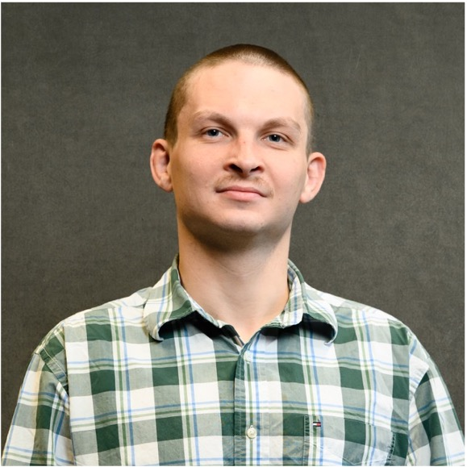
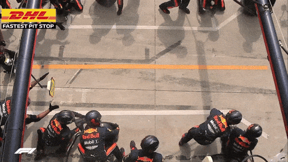

Lab Members
Assistant Research Professor: Dr. Dillip Kumar Panda
Postdoc: University of Michigan, Florida State University; Ph.D., University of Wollongong, 2011
Dr. Panda develops high-temperature all-solid-state lithium batteries for electric vehicles and studies materials for anodes, solid electrolytes, and cathodes. His broader work spans polymer-derived ceramics, conducting polymers, nanomaterials, metal-organic frameworks, sensors, solar cells, and supercapacitors. He has published more than 35 peer-reviewed papers and four book chapters, and received the Clemson University Distinguished Postdoctoral Award in 2022. Outside research, he enjoys music and writing in Odia. LinkedIn

Graduate Student: Bryson Hedrick
B.S., Appalachian State University, 2024
Bryson comes from a physics background, with prior work on optical tweezers at Appalachian State University and nanofabrication at UT-ORII. His current research focuses on machine learning, ceramics, and image processing. Outside academics, he enjoys hiking, primitive living skills, climbing, foraging, playing DnD, and coding in his spare time. He is from near the filming location for District 12 in The Hunger Games, released in 2012. LinkedIn
Graduate Student: Tariq El-Hawary
M.S., Arab Academy for Science, Technology & Maritime Transport (AASTMT), 2022; B.S., AASTMT, 2017
Tariq has a mechanical engineering background focused on energy and power systems, and has been involved in teaching since 2017 while completing his degrees. His training centers on fluid mechanics, mechanical design, and thermal sciences. His current research focuses on materials science, especially material integrity and mechanical behavior relevant to energy and industrial applications. Outside academics, he enjoys walking and listening to podcasts in his spare time.
Graduate Student: Nishanth Manda
M.S., University of Michigan-Dearborn, 2024; B. Eng., SRM University AP, 2022
Nishanth has a mechanical engineering background and has contributed to research on battery thermal management using nanofluid cooling for Li-ion cells, as well as high-entropy alloy thermal barrier coatings for high-temperature applications. His current work centers on advanced materials and thermal systems for energy technologies, with emphasis on nanofibers for next-generation batteries and thermal management. Outside research, he enjoys outdoor activities and traveling in his spare time.
Summer Intern: Tuhina Sambhus
Tuhina is a Nuclear Engineering undergraduate student from New Zealand at South Carolina State University. She has research experience in HPGe detector systems, gamma spectroscopy, and a machine learning weed classification project focused on image analysis and data processing. After graduation, she hopes to pursue a Ph.D. at the intersection of healthcare and engineering. Outside academics, she plays Division 1 tennis, performs music, and enjoys running.
Possible Openings
• Postdocs with proven experience and expertise in: energy materials, advanced characterization, ceramic processing/manufacturing, or AI/ML and optimization for imaging and materials data.
• Ph.D. and M.S. students with a background and strong interests in: energy science, energy storage, ceramic engineering, electrochemistry, advanced characterization, or ceramic processing/manufacturing. More details about our MSE Graduate Program.
• Undergraduate students in MSE or related majors with an interest in the above research topics are encouraged to apply.
• Visiting scholars and interns with an interest in the above research topics are welcome to apply.
Send inquiry emails to Dr. Hou at hou4+inquiry [at] clemson [dot] edu, with a subject line specifying your name, the position, and the expected start time, e.g. Application_Postdoc_JohnDoe_2025fall.
Please keep your email concise, state briefly why you are interested in this lab and what your preliminary plan is, and attach a CV. No need for other documents or certificates (your email is your cover letter). If you are applying to a specific advertisement, note this in your email.
About Clemson University
• Clemson University is a leading public research institution located in Clemson, South Carolina, classified among "R1: Doctoral Universities - Very high research activity." Gallery of our campus
• Clemson University's College of Engineering, Computing, and Applied Sciences (CECAS) is committed to producing outstanding graduates. Our MSE program ranks #1 for the state of South Carolina by College Factual and EduRank, and 29th among national public universities by US News and World Report. Clemson is listed as Top 10 Best Small College Towns, per USA TODAY reviews
• Clemson University Core Values: Integrity; Respect; Diversity; Patriotism; Excellence; Self-Reliance.
• Website intro of Clemson MSE Program. Also check our intro video.
• Clemson MSE Facilities Tour video 2024. Clemson CECAS video playlist.
Where We Are From
Fellowship and Scholarship Opportunities
We are committed to workforce training and professional development in STEM fields, please contact us if you are interested in working with us through these opportunities.
• Undergraduates: CECAS Opportunity Grants, Breakthrough Scholars Program, Creative Inquiry, and many others.
• Graduates: Major Fellowships, DOE Office of Science Graduate Student Research (SCGSR) Program, NSF Graduate Research Fellowship Program (GRFP), NSF EPSCoR Graduate Fellowship Program (EGFP), and many others.
• Postdocs: NSF Postdoctoral Fellowships, American Society for Engineering Education (ASEE) eFellows, Clemson Research Fellows, and many others.
Teamwork leads to proper perfection.

A pit stop, 4 tires swapping, by 22 human beings, in less than 2 seconds. Truthfully, it's an art.Source: Red Bull Racing, 2019 Brazilian GP.
Friends of Our Lab (at least in my personal perspective)
• The Tiger, Dum Spiro Spero (While I breathe, I hope)
• Hokie Bird, Ut Prosim (That I May Serve)
• Wolfpack, Think and Do